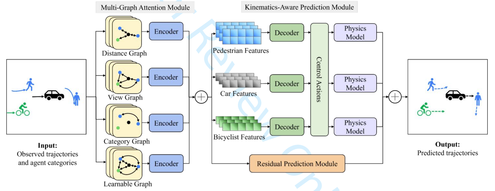
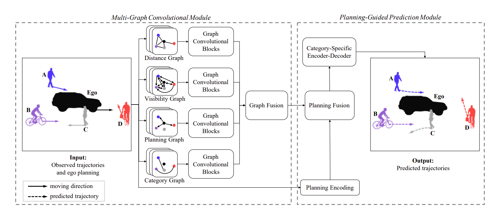

The list below may not be up to date, please check Google Scholar for my latest publications.
2025
2024
 Trustworthy Human-AI Collaboration: Reinforcement Learning with Human Feedback and Physics Knowledge for Safe Autonomous DrivingarXiv preprint arXiv:2409.00858 , 2024
Trustworthy Human-AI Collaboration: Reinforcement Learning with Human Feedback and Physics Knowledge for Safe Autonomous DrivingarXiv preprint arXiv:2409.00858 , 2024-  JICVKinematics-aware multigraph attention network with residual learning for heterogeneous trajectory predictionJournal of Intelligent and Connected Vehicles (JICV) , 2024
 IEEE-TITS
Toward C-V2X Enabled Connected Transportation System: RSU-Based Cooperative Localization Framework for Autonomous VehiclesIEEE Transactions on Intelligent Transportation Systems (IEEE-TITS) , 2024
IEEE-TITS
Toward C-V2X Enabled Connected Transportation System: RSU-Based Cooperative Localization Framework for Autonomous VehiclesIEEE Transactions on Intelligent Transportation Systems (IEEE-TITS) , 2024-  CACIEEgo-planning-guided multi-graph convolutional network for heterogeneous agent trajectory predictionComputer-Aided Civil and Infrastructure Engineering (CACIE) , 2024
 COMMTR
Traffic expertise meets residual RL: Knowledge-informed model-based residual reinforcement learning for CAV trajectory controlCommunications in Transportation Research (COMMTR) , 2024
COMMTR
Traffic expertise meets residual RL: Knowledge-informed model-based residual reinforcement learning for CAV trajectory controlCommunications in Transportation Research (COMMTR) , 2024
 COMMTR
COMMTR